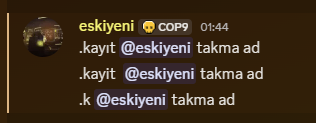

Bot hakkında genel bilgi veriri. Vermiş olduğu prefix ve ping bilgisinden bir sorun olup olmadığını anlayabilirsiniz. Eğer bot geç yanıt veriyorsa ping'ini kontrol ediniz. Eğer prefix "!" şeklinde görünüyor ise lütfen eskiyeni'ye danışın.
Bu 3 komut da aynı işlevdedir. Kullanıcıyı kayıt etmek için örneklerde olduğu şekilde kullanabilirsiniz. Eğer kullanıcının ismini düzenlemek isterseniz (uygunsuz bir isim olmadığı sürece lütfen kullanıcıların isimlerini değiştirmeyiniz) komutu kullanırken parametre olarak yeni ismi girebilirsiniz. Örneklerde detaylıca anlatılmıştır.
Eğer sadece partner yetkilisi iseniz bu komut sizinle alakalı değildir. Kanalları Yönetme izni gerektirir. Komutu kullanırken ya bir ses kanalında olmalısınız yada kanalık ID'sini parametre olarak vermelisiniz. Örneklerde detaylıca anlatılmıştır.
BAKIMDA
Bu kullanım kullanıcının takma adını değiştirmez. Kullanıcının takma adını değiştirmek için aşağıdaki gibi kullanın (takma adı sadece uygunsuz takma adları temizlerken değiştirdiğimizi, bunun dışında kullanıcı adına dokunmadığımızı hatırlatırım):
Bot şu anda Beta sürümündedir. Botta yaşanan hataları hızlıca tespit edebilmemiz ve olası açıkları kapatmamız için herhangibi bir sorunda eskiyeni ile iletişime geçiniz.
Bot şu anda optimize değildir. Yanıt verme süresi birkaç saniyeyi bulabilir.
Sıralama gibi özellikler şuanda bulunmamaktadır, ama ileride eklenecektir.
Bir kullanıcıyı kayıt etmeden önce kayıt kanalına herhangibi bir mesaj attığından emin olunuz.